RDD操作详解
rdd最主要方法
- getPreferredLocations: 本地性相关(以后再详细研究)
- dependencies/getDependencies: 判断是否有ShuffleMapTask、获得firstParent
- partitions/getPartitions: 决定Task数，每个partition产生一个Task。源头一般是HadoopRDD中的hadoop的InputFormat.getSplits()或者是shuffle时设置的分区(此时数据来源是shuffle reduce阶段的shuffleFetcher获得的数据)。每个任务中都是通过获得相应的partition进而不断向前查找得到源头的分区进行相应的数据操作。
- partitioner: 默认是空的。表明该RDD是怎样进行分区的。如shuffle的reduce端的RDD的partitioner就是shuffle时设置的partitioner，默认是HashPartitioner。
- iterator(): 各Task对RDD操作时会调用此方法，返回数据集的Iterator。当在缓存中时直接返回，不在缓存中时则调用 compute方法并决定是否要将结果放到缓存中。
- compute(): 主要用于生成Iterator，主要实现hasNext与next方法。主要有三种生成Iterator形式：
1、直接封装父RDD.iterator()得到的Iterator，即hasNext或next方法中会调用父RDD的Iterator的hasNext、next进行相应处理。如MappedRDD/FilteredRDD等
2、f(firstParent.iterator()): 对父RDD的Iterator进行自定义处理, 即f中会使用Iterator的hasNext和next方法即对整个分区进行操作。如MapWithPartition等。其实2和1是相同的，只是遍历Iterator(调用hasNext和next)逻辑时2是外部传来的f，而1是由scala.collection.Iterator实现的各个方法。所以我们可以使用2的方式灵活的对分区数据进行转换，如转换成Map对value进行合并等。
3、shuffle: 此时该RDD是shuffle reduce的角色。compute主要通过调用shuffleFetcher获得shuffle map阶段的数据再进行其他处理。如ShuffleRDD等。
实例

这里先用WordCount实例来过下整个流程。
sc.textFile会产生HadoopRDD以及MappedRDD(hdfs上得到的是(行号，line)，我这只需要line，故需要map转换一下)；reduceByKey会产生MapPartitionRDD、ShuffleRDD、MapPartitionRDD。
1、wordcount的代码会在driver上按顺序执行
2、red.saveAsTextFile为第一个action，会调用SparkContext.runJob, 然后触发DAGScheduler生成stages。
3、redRDD作为finalStage,记为stage1,其shuffleDep为None。submitStage(finalStage)会去寻找其父stages，即根据RDD间的依赖去寻找ShuffleDependency, 本例是在reduceByKey中的ShuffleRDD会对其父RDD MapPartitionsRDD进行ShuffleDependency，所以该MapPartitionsRDD处会生成一个Stage，记为stage2,其shuffleDep为None,即isShuffleMap=true。继续往前找都没有ShuffleDependency，所以最后就stage2和stage1两个stage，且stage1依赖于stage2，需要stage2完成后才能跑stage1。这里会先submitStage(stage2)。
4、由于stage2 isShuffleMap=true，则生成ShuffleMapTask, MapPartitionsRDD的partitions数决定了有多少个ShuffleMapTask,然后组装成TaskSet发给TaskScheduler再提交到相应的Executor上进行执行。为什么叫ShuffleMapTask，而不叫ShuffleTask应该是ShuffleMapTask只完成了shuffle的map阶段。
5、Executor上会有线程池来跑ShuffleMapTask，主要是运行ShuffleMapTask中的runTask方法。
a、该方法中先得到partitioner的分区数即reduce的分区数(在调用shuffle相关RDD操作时会指定,一般由defaultPartitioner方法指定)。
b、调用rdd即MapPartitionsRDD的iterator()方法，iterator方法的主体是compute()并返回Iterator对象, 其又会去调用firstParent.iterator()，即MappedRDD的iterator()，MappedRDD的compute()方法又会调用其firstParent.iterator()，不断向前调用直到数据源头HadoopRDD。在compute不断向前调用中各RDD返回的Iterator对象都是对前一个RDD返回的Iterator进行封装。最底层的Iterator即是HadoopRDD的compute形成的Iterator,该Iterator的next方法是通过HadoopPartition(这里的HadoopPartition是将iterator中的split参数进行转换得到)得到InputSplit，继而通过RecordReader来获得hdfs上的数据。
c、遍历得到的Iterator，将key按照partitioner.getPartition(key)得到所在的bucket(bucket是文件，每个reduce一个bucket(关于bucket以后有更详细的说明，这里先略过), 并将该kv对写到得到的bucket中。全部写完后即完成了shuffle的map阶段，此时ShuffleMapTask也就成功完成。
6、所有的ShuffleMapTask都完成后，stage2就结束了，这时开始提交stage1。由于stage1 isShuffleMap=false，故会产生ResultTask, task数为ShuffleRDD的分区数(reduce的分区数)。提交到各Executor执行。
7、Executor上的线程池来执行ResultTask,主要是ResultTask的runTask方法。
a、调用rdd即MapPartitionsRDD的iterator/compute方法，其又会去调用ShuffleRDD的iterator/compute方法。
b、ShuffleRDD的compute方法会使用ShuffleFetcher从相应worker上指定的shuffler map阶段产生的bucket(根据shuffledId以及分区号获得对应的bucket)获得对应的Iterator。
c、遍历得到的Iterator, 调用hasNext/next会使ShuffleFetcher真正开始从各bucket获取数据, 每获得一个kv就进行相应操作，这里是写到hdfs上。
note:产生shuffle形为的RDD如ShuffleRDD，其父RDD会作为shuffle的map端的输出源， 而ShuffleRDD本身是作为shuffle的reduce端
rdd.iterator()方法是其实没有对数据进行操作，只是不断创建新的Iterator。Task再得到Iterator之后才开始遍历数据。当然如果rdd.persist()后，rdd.iterator()会将结果取出放到缓存中。
Transform
map
将元素转成其他类型
RDD:MappedRDD
compute:调用Iterator.map()方法，hasNext方法为self.hasNext,next方法中执行f(元素)从而实现类型转换
partitions:parent.partitions
像map等pipline的主要是对父RDD的Iterator的hasNext和next进行加工，如
def map[B](f: A => B): Iterator[B] = new AbstractIterator[B] {
def hasNext = self.hasNext
def next() = f(self.next())
}
filter
过滤不满足f的元素
RDD:FilteredRDD
compute:调用Iterator.filter()方法，hasNext中会一直调用f，直到f输出为true, 同时生成hd=self.next, next方法中直接返回hd
partitions:parent.partitions
flatMap
通过f后各元素都转成Iterator（如split方法)， 然后遍历所有各Seq元素
RDD:FlatMapRDD
compute: 调用Iterator.flatMap()方法，调用f后各元素转成Iterator,调用转化后的各元素toIterator方法，cur = f(self.next).toIterator， hasNext为cur.hasNext, cur遍历完后重新对cur赋值下个元素，next方法为cur.next
partitions:parent.partitions
distinct
将元素变成(x,null)再reduceByKey((x,y)=>x), 所以是按整个元素进行distinct，并不是按key
repartition和coalece
重新分区，有待研究。用于filter后很多分区数据无效进行分区重规划
sample
元素取样,fraction表示rand > fraction的都被选中
RDD:SampledRDD, 这里只研究不放回抽样，放回抽样有待研究
partitions：生成SampledRDDPartition，只比一般的Partition多了个seed参数
compute: 调用Iterator.filter()，f为各partition的seed生成的随机数>fraction
intersection
rdd1.subtract(rdd2): 获得rdd1和rdd2共有的值。
先map(x=>(x,null))变成kv型然后使用cogroup(具体实现见spark RDD keyvalue操作) 得到按key聚合的值对，然后过滤掉其中为空的记录并输出key。
def intersection(other: RDD[T]): RDD[T] = {
this.map(v => (v, null)).cogroup(other.map(v => (v, null)))
.filter { case (_, (leftGroup, rightGroup)) => leftGroup.nonEmpty && rightGroup.nonEmpty }
.keys
}
这里感觉不应该使用cogroup。而应该要实现和SubtractedRDD类似的RDD，即将rdd1放到HashMap后，再遍历rdd2的kv，对Map中对应的key的value进行合并或者打一定的标志，等遍历完后再将有打标志的记录输出即可；或者再创建一个HashMap,遍历rdd2的kv时将Map中对应的key-value移到新HashMap中，最后新HashMap即是最后的结果。
不过要是实现SubtractedRDD的话，就是要返回rdd1与rdd2有共同key的rdd1的kvpairs，感觉有些怪异。。。
subtract
rdd1.subtract(rdd2): 去掉rdd1中与rdd2相同的值。
先map(x=>(x,null))变成kv型然后使用substractByKey,即SubtractedRDD(具体实现见spark RDD keyvalue操作) 得到去掉rdd2 key的rdd1的结果然后再输出key就是最后的结果。
union 以及 ++
RDD:UnionRDD
partitions: 生成rdd1.partitions.size + rdd2.partitions.size 个UnionPartition
compute: 通过UnionPartition得到对应的rdd的partitions以及splitIndex从而得到真正的split，调用rdd.iterator(split)
dependencies: RangeDependency, 依赖数为rdd的个数，每个Dependency包含了对应的rdd以及该rdd各partition在UnionRDD的partition的位置(按rdd顺序)
cartesian
迪卡尔积
RDD:CartesianRDD
partitions: rdd1.partitions.size * rdd2.partitions.size 个CartesianPartition，包含了rdd1对应的split s1和rdd2对应的split s2， for (s1 <- rdd1.partitions; s2 <- rdd2.partitions)
compute: 每个CartesianPartition得到对应的s1和s2, 遍历 s1和s2中的元素得到(x,y)
dependencies: 有两个NarrowDependency， 其中rdd1的NarrowDependency.getParent(id)为id/numPartitionsInRdd2, rdd2的NarrowDependency.getParent(id)为id % numPartitionsInRdd2
groupBy(f)
对各元素执行f后，对结果进行reduceByKey, 即(f(t), t).reduceByKey() ，得到的结果是(K,Seq[T]), f将T=>K, reduceByKey将原元素T组装成Seq
pipe
RDD各元素是command,利用ProcessBuilder进行执行
RDD:PipedRDD
mapPartitions(f)
RDD:MapPartitionsRDD
compute: func(context, split.index, firstParent[T].iterator(split, context)), func是func = (context: TaskContext, index: Int, iter: Iterator[T]) => f(iter)，即由用户自定义的f来操作分区
map是针对的是partition中各个元素，即由系统自动实现遍历parition, mapPartitions则是f操作的是整个partition，即用户在f中自行调用Iterator的hasNext和next进行更灵活的操作，像MappedRDD等RDD其实也有f，只是该f被写在Iterator对象中，我们没法自定义。
mapPartitionsWithIndex/TaskContext等都是类似的
zip
将rdd1和rdd2的元素依次组成(x,y), x是rdd1的元素,y是rdd2的元素，x和y在rdd1和rdd2的顺序是一样的，即(x1,y1),(x2,y2). 要求rdd1和rdd2的partition数要一样, partition中元素个数如果多于另一个，则忽略多出部分。
RDD:ZippedRDD
compute:由ZippedPartition得到对应的partition1和partition2, 调用Iterator.zip方法进行partition元素的zip，也是按对应顺序进行zip
partitions: 和rdd1.partitions.size个数一样的ZippedPartition，包含了处于相同位置的rdd1 partition1和rdd2 partition2
zipPartitions
zip与zipPartitions的区别和map与mapPartitions的区别类似
RDD:ZippedPartitionsRDD2
compute:会调用f(rdd1.iterator(partitions(0), context), rdd2.iterator(partitions(1), context))，即f操作的是partition1和partition2产生的Iterator1和Iterator2
Action
action主要调用SparkContext.runJob方法。
SparkContext.runjob
runJob的工作流程是在各worker上计算执行各Task,算完的结果会放到CompletionEvent对象中，在任务完成时会请求DAGSchedule的complete相关方法，最终由会调用JobWaiter的taskSucceeded(index: Int, result: Any)，该方法中会调用resultHandler(index, result.asInstanceOf[T])对结果进行聚合(该操作在driver上)。 taskSucceeded中会判断当任务全部完成时notifyAll，释放锁，从而driver可以进行对resultHandler产生的最终结果的进行操作
runJob通用形式是
def runJob[T, U: ClassTag](rdd: RDD[T], func: (TaskContext, Iterator[T]) => U, partitions: Seq[Int], allowLocal: Boolean, resultHandler: (Int, U) => Unit)

func是在各worker上执行各task时执行的方法,该方法主要是获得RDD的Iterator，然后通过hasNext/next来遍历Iterator中的各元素。
resultHandler是在driver上执行(DAGScheduler的JobWatier在监听到Task完成时执行)。参数第一个参数是partitionId，第二个是该分区运行的结果。该方法一般是对各分区的结果进行汇总。每个Task完成时都会调用该方法将结果进行汇总。
像reduce/fold/aggreate会使用通用的runJob,即设置自己的resultHandler，而其他如count等会使用默认的resultHandler,如
def runJob[T, U: ClassTag](
rdd: RDD[T],
func: (TaskContext, Iterator[T]) => U,
partitions: Seq[Int],
allowLocal: Boolean
): Array[U] = {
val results = new Array[U](partitions.size)
runJob[T, U](rdd, func, partitions, allowLocal, (index, res) => results(index) = res)
results
}
即采用系统自己实现的resultHandler： (index, res) => results(index) = res。 将各task的结果放到results中。然后再对results进行操作，如count就是results.sum
foreach(f)
调用Iterator.foreach(f), 其中调用Iterator的hasNext和next来遍历各元素，并调用f(next())
foreachPartition(f)
f操作的是整个分区，即在用户的f中自己调用Iterator遍历方法进行相关操作
collect、toArray
调用Iterator.toArray将各分区变成Array形式，再Array.concat(results: *) 来将各Array合并成一个Array
使用了默认的resultHandler，将各task上算完的结果放到results中，并执行Array.concat(results: *)
def collect(): Array[T] = {
val results = sc.runJob(this, (iter: Iterator[T]) => iter.toArray)
Array.concat(results: _*)
}
note:该操作如果数据量很大时要尽量避免使用，或者要么是driver OOM或者akka传输的数据量大于其最大值而报错。
reduce
将各元素从左到右按f进行合并
def reduce(f: (T, T) => T): T = {
val cleanF = sc.clean(f)
val reducePartition: Iterator[T] => Option[T] = iter => {
if (iter.hasNext) {
Some(iter.reduceLeft(cleanF))
} else {
None
}
}
var jobResult: Option[T] = None
val mergeResult = (index: Int, taskResult: Option[T]) => {
if (taskResult.isDefined) {
jobResult = jobResult match {
case Some(value) => Some(f(value, taskResult.get))
case None => taskResult
}
}
}
sc.runJob(this, reducePartition, mergeResult)
// Get the final result out of our Option, or throw an exception if the RDD was empty
jobResult.getOrElse(throw new UnsupportedOperationException("empty collection"))
}
参数：
f(T,T)=>T： 将两个元素进行合并。 f的第一个参数是resultHandler(index,res)的res,即是以第一个完成的task的结果作为f执行的第一个点。
reducePartition方法 (在SparkContext的runJob中是processPartition)用于在各worker上对其分配的Partition的数据进行计算reduceLeft从左到右计算。
mergeResult方法(在SparkContext的runJob中是resultHandler)。DAGSchedule的JobWaiter在任务完成时会调用该方法，用于将CompletionEvent中存放的结果进行f操作。所以最后结果的合并是在driver上进行操作。最终结果是对闭合变量进行相应操作。
fold
和reduce差不多，也是各worker分别计算，然后汇总在driver上计算，不同点是 fold(zeroValue: T)(op: (T, T) => T)。 会调用TraversableOnce的foldLeft(z)(op)。
zeroValue和下面的aggregate用法一样都是为了节省内存开销。
aggregate
def aggregate[U: ClassTag](zeroValue: U)(seqOp: (U, T) => U, combOp: (U, U) => U): U = {
// Clone the zero value since we will also be serializing it as part of tasks
var jobResult = Utils.clone(zeroValue, sc.env.closureSerializer.newInstance())
val cleanSeqOp = sc.clean(seqOp)
val cleanCombOp = sc.clean(combOp)
val aggregatePartition = (it: Iterator[T]) => it.aggregate(zeroValue)(cleanSeqOp, cleanCombOp)
val mergeResult = (index: Int, taskResult: U) => jobResult = combOp(jobResult, taskResult)
sc.runJob(this, aggregatePartition, mergeResult)
jobResult
}
TraversableOnce中的aggregate中的foldLeft代码：
def foldLeft[B](z: B)(op: (B, A) => B): B = {
var result = z
this.seq foreach (x => result = op(result, x))
result
}
和fold差不多，也会调用会调用TraversableOnce的foldLeft(z)(op)。不同点是foldLeft的op是(B, A) => B，。而fold方法都是同类型,op是(A1,A1)=>A1。
zeroValue的作用是在各task中，zeroValue将作为seqOp的第一个参数，然后将第二个参数不断合并到第一个参数，即合并到zeroValue中。也就是在同个task中使用的都是同一个U类型的zeroValue对象，对于zeroValue是集合对象的，可以节省内存开销。
aggregate实例：
val zeroCombiner = mutable.Map.empty[Int, (Int, DoubleMatrix)]
val aggregated = data.aggregate(zeroCombiner)({ (combiner, point) => combiner += point.k -> point.v}, {XXX})
//zeroCombiner会作为seqOp的第一个参数，不断将point的相关属性合并到combiner即zeroCombiner中并返回combiner作为下一次seqOp操作的第一个参数。
zero的另一个例子：
val z = sc.parallelize(List("a","b","c","d","e","f"),2)
z.aggregate("")(_ + _, _+_)
res115: String = abcdef
z.aggregate("x")(_ + _, _+_)
res116: String = xxdefxabc
count
rdd的元素数。 各task计算各自分区的记录数，结果后会放到results中，然后调用results.sum求得总和
countApprox
待研究。和count相似，但有个timeout，即在规定时间内返回结果，结果并不一定是总数。
countByValue
计算各元素出现的次数。
利用mapPartitions先对将各partition变成 Map(v->次数)的类型，然后调用reduce(mergeMaps), mergeMaps(m1,m2), 将m2的(v->次数)合并到m1中，遇到相同的v时将次数相加
take(num)
取出RDD中的前num个元素。
算法思路：第一次取第一个partition, 看第一个partition的元素数目来决定接下来要查几个partition.具体：
先取第一个partition, 得到一个Iterator，然后res.foreach(buf ++= _.take(num - buf.size))，从第一个分区取出需要数目的元素存到buf中。如果数据不够，则
- buf为空即第一个partition取出的数据为空，如filter完后某个partition为空。此时会查找剩下所有的partition。(该分支只在第一个partition分析完才发生)
buf不空，则这轮要查找的partition数为：
numPartsToTry = (1.5 num partsScanned / buf.size).toInt
//partsScanned是已经查询的分区数
//理想的情况是得到第一个分区的数目，然后 num / buf.size可以得到总共需要多少分区, 1.5倍是过高估计。 乘以partsScanned具体原因不明白，应该是第二轮如果还没取到，则再加强。
不断重复直到buf.size==num
first
task(1)
top
top(num: Int)(implicit ord: Ordering[T])
按rdd各元素的升/降 来获得前n个元素
原理：
1、利用mapPartitions(f)将各分区的数据添加到优先队列中，队列大小为num (new BoundedPriorityQueueT)。即完成将一个分区的数据转化成一个优先队列的过程。
2、reduce: 将各个分区的优先队列进行合并，最后得到的优先队列即是最大/最小的前n个数
3、对最后的num个结果进行sorted(org) 得到最终的排序结果
以上是0.9版的代码，总感觉有些问题，1.0的代码比较应该是准确的。
1.0的top调用的是takeOrdered方法，其中的队列是val queue = new BoundedPriorityQueueT(ord.reverse),即声明了queue是最大堆还是最小堆
takeOrdered
和top一样：top(num)(ord.reverse)
keyBy(f)
变成(f(x),x)对，即map(x => (f(x), x))
saveAsTextFile
将结果保存到hdfs等文件系统上
其他keyvalue型的RDD的操作见spark RDD keyvalue操作